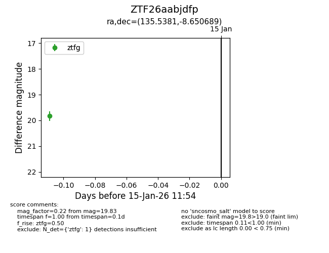
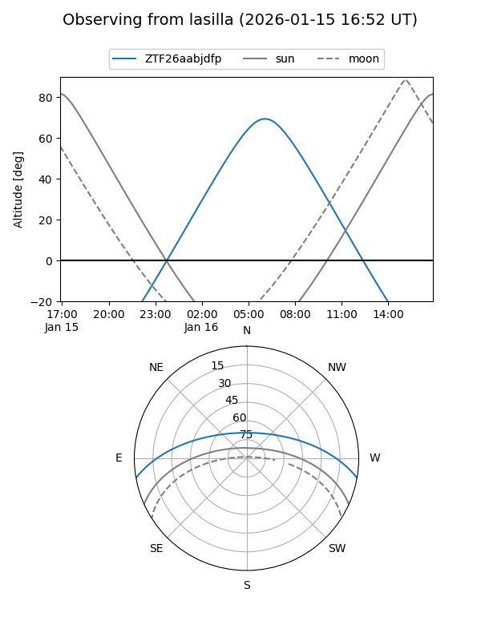
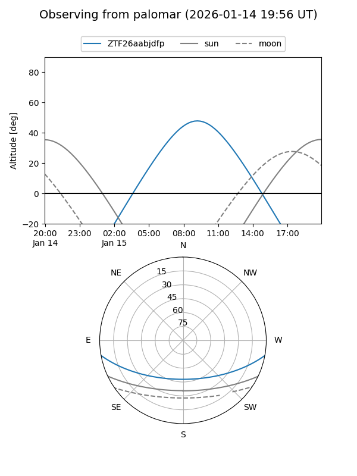

ZTF26aabjdfp
Target ZTF26aabjdfp at 2026-01-15 11:55
Aliases and brokers:
FINK: link
Lasair: link
ALeRCE: link
alt names
ZTF26aabjdfp (ztf,fink_ztf)
Coordinates:
equatorial (ra, dec) = 135.5381,-8.65069
equatorial (HMS+DMS) = 09:02:09.15,-08:39:02.48
galactic (l, b) = (237.3197,+23.98372)
Flags:
Photometry:
last ztfg=19.83
1 ztfg detections
Lightcurve

Visibility


Additional plots